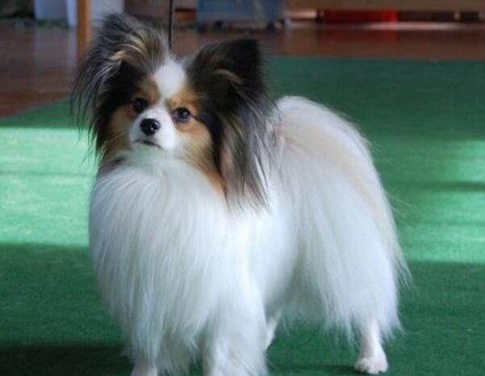

蝴蝶犬常见于我们生活当中，这是一种非常喜欢依赖人的狗狗，很讨人们喜爱，而且很喜欢在户外活动玩耍。它算是可爱小型犬的宠物代表了，但是想养好蝴蝶犬，那要注意事项可是有很多哦，那么小编就说说怎么正确喂养蝴蝶犬
一、蝴蝶犬饲养注意事项
1、蝴蝶犬不需修剪毛发
蝴蝶犬每年会在春季换一次毛，所以不需额外为它修剪毛发。蝴蝶犬外表娇小，体格其实要强壮很多，它多适当运动，有助于促进它的食欲，有助于肠胃消化吸收。
2、摄取营养充足
若是饲养的话应该要注意，每天应喂蝴蝶犬大约150克的新鲜肉类食品，还必须给它数量差不多的素食，考虑到狗狗的营养是否充足。还有可以吃一些无糖、低糖的硬饼干，还有喝水也要喝凉白开。

3、繁殖不能近亲
若想给蝴蝶犬配种，那就要注意不要用近亲和它配，不然它优美的体态和美丽的毛发，这些特征都会消失无踪。还有蝴蝶犬的趾甲要及时修剪，不然趾甲太尖会抓伤主人抓破坏衣服。
二、蝴蝶犬受伤注意事项
1.非计划内交配
如果母蝴蝶犬不小心和其它狗狗发生了交配行为，而主人又不想蝴蝶犬怀上宝宝，那么建议主人可採取一些办法防止怀孕。直接带蝴蝶犬去医院，兽医会帮它注射药物防止怀孕，这不是什么紧急事故所以大可不必焦急。
提醒：重要的是，虽然不是迫切的事情，但还是要在24小时以内带去医院停止妊娠。
2.螫伤或蛇咬伤
如果蝴蝶犬在户外被蜜蜂蛰伤或者被蛇咬伤，那么一定要保证它周围环境凉爽，并避免运动。如果伤口肿胀持续一个小时，或是它的脸部和脖子被咬伤则应去看医生。这时后要让蝴蝶犬的伸出它的舌头，确保它呼吸能够顺畅。
贴心小提醒：如果主人知道的知识比较多，可以先辨别蛇和蜜蜂是否有毒再决定将蝴蝶犬送往医院诊治。